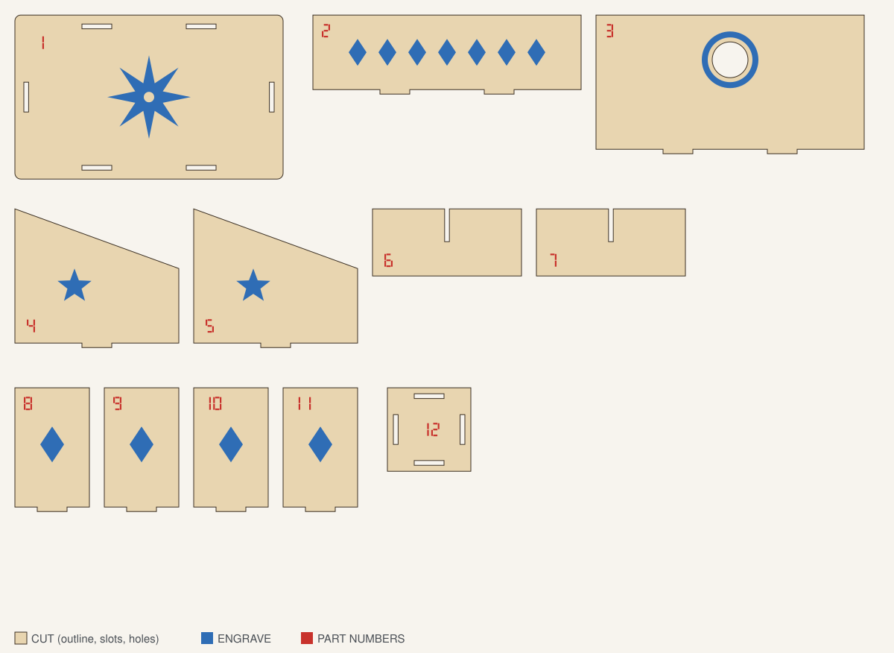
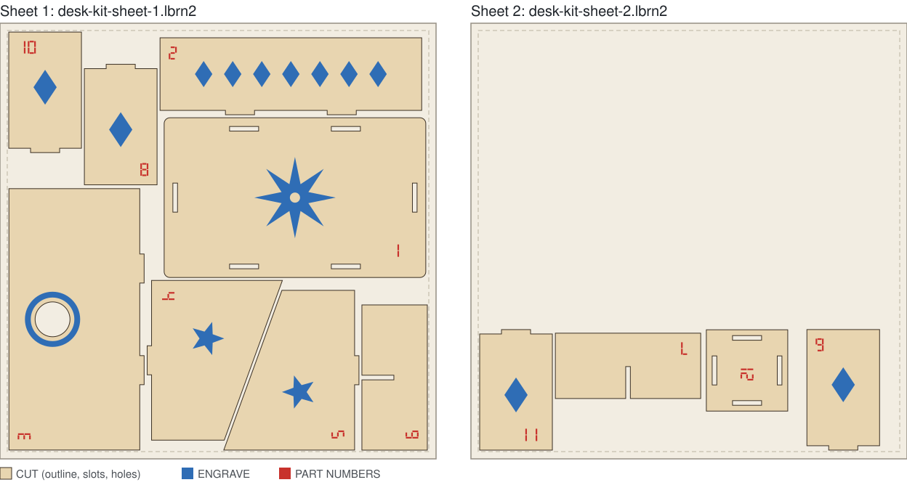

Nest a laser-cut kit onto your plywood sheets and keep its layers
A laser kit is more than its cut lines. Each part carries engraving and a part number, and each of those layers has its own speed and power. If a nesting tool only moves the outlines, you put the engraving back by hand on every sheet. Nestbolt can open a LightBurn project (.lbrn2), nest each group as one rigid piece, and write one editable .lbrn2 per sheet with the layers and their settings unchanged. LightBurn project support is a preview feature: it is in the v0.2.0-alpha.1 preview release and in the browser app, which runs a newer build. This page shows one measured job: a 12-part kit with cut, engrave and part-number layers, nested onto 300 × 300 mm sheets of plywood, with every output sheet checked against the input.
Free and MIT-licensed; your files never leave your computer.
The kit
A desk organiser for 3 mm plywood, drawn for this example: a base, front, back and two side walls with tabs and slots, two dividers, and a small pen cup with four walls and a base. An AI agent drew it with Inkbolt, an open-source vector tool by the same author, on three layers in LightBurn's default colours:
- CUT (black, layer 00): the outlines, the slots for the tabs and a 24 mm cable hole.
- ENGRAVE (blue, layer 01): a compass rose, a band of diamonds, stars, and a ring around the cable hole.
- PART NUMBERS (red, layer 02): the numbers 1 to 12, drawn as seven-segment shapes rather than text.
Inkbolt saved the drawing as SVG. A short script read the contours from that SVG and wrote them into a LightBurn project: one group per part, holding the part's cut path (outline, slots and holes together), its engraving and its number. LightBurn itself did not open or save this file. Nestbolt's own tests with projects saved by LightBurn are in its LightBurn notes. The layer settings in the file are placeholders, there to show that they come through unchanged: CUT is Line at 10 mm/s and 70% power, ENGRAVE is Fill at 200 mm/s and 25%, PART NUMBERS is Fill at 300 mm/s and 15%. Set your own for your machine and material.

| Stock | 300 × 300 mm sheets of 3 mm plywood, as many as needed |
|---|---|
| Parts | One of each of the 12 parts |
| Margin | 5 mm on every side of the sheet |
| Part spacing | 2 mm |
| Edge spacing | 1 mm |
| Allowed rotations | 0°, 90°, 180°, 270°; no mirroring |
| Time budget | 30 seconds, repeatable mode |
Measured on 2026-10-27 with the nestbolt command-line tool built from main at 36f162d, on a Windows desktop PC. Nestbolt placed all 12 parts on 2 sheets with 74.2% utilisation (placed part area divided by the material used, 1.32 sheets: the first sheet and the used strip of the second): 8 parts on the first sheet and 4 on the second. The second sheet's parts sit within 89 mm of one edge, and Nestbolt counts the rest of that sheet, 300 × 205 mm, as one clear offcut. The independent check: valid, and a separate nestbolt validate run agreed. The search finished in about 10 seconds, and two runs gave byte-identical layouts and sheet files.

What was checked on every sheet
A separate script compared each output sheet with the input project. It reads the files itself and uses none of Nestbolt's code.
- Every part, once. All 12 groups appear exactly once across the two sheets.
- Every layer, with its part. 12 cut paths, 9 engravings and 12 part numbers went in, and the same 12, 9 and 12 came out: 8, 7 and 8 on the first sheet, 4, 2 and 4 on the second. Each group keeps the same children in the same order, on the same layers, with the path data unchanged.
- One move per part. Every point and curve handle of a part, on all three layers, moved by the same rotation (0°, 90°, 180° or 270°) and shift, to within rounding error (under 0.000000001 mm). The engraving and the number sit exactly where they were on the part, and nothing was mirrored.
- Layer settings unchanged. The three layers' settings are byte-for-byte the same as in the input. Each sheet adds one thing: a 300 × 300 mm sheet outline on LightBurn's T1 tool layer, named
SHEET, which marks the stock and is not cut. Leave it out with--sheet-outline false. - Geometry. Engraving and numbers lie inside their part's outline and clear of its holes; parts are at least 2.0 mm apart (the closest pair 2.02 mm) and 6.0 mm from the sheet edges (the 5 mm margin plus the 1 mm edge spacing).
Group each part before you nest
Nestbolt moves each group as one piece. Shapes that are not in a group are handled by position: an engraving or number is attached to an ungrouped cut outline when its bounding rectangle lies wholly on that outline's material, not over a hole, slot or notch. Artwork is never attached to a group, so a loose engraving next to grouped cut lines stays loose. With the same kit saved without groups, attachment kept most parts together, but two things went wrong, and the check still said valid, because it checks overlaps and spacing, not which engraving belongs to which part:
- The engraved ring around the back wall's cable hole was not attached, because its bounding rectangle covers the hole. It was nested as a separate piece, away from the back wall.
- When each slot and hole was saved as its own shape, rather than as part of the outline's path, every slot and hole was nested as a separate part, and the base, back wall and pen-cup base came out without them.
Nestbolt gave no warning in either case. The sign was the part count: the import listed 13 parts, and then 23, for a 12-part kit. Compare the part count Nestbolt lists after import with your kit; more parts than you expect means something is not grouped.
Grouping fixed both. With every part grouped, the ring stayed on the back wall, as in the result above; and in a second run with the slots and holes saved as separate shapes inside each group, they stayed with their parts too, and the layer check passed. Nestbolt then treats such holes as filled, so it puts no other parts inside them. So in LightBurn, select each part together with its holes, engraving and number, group them, and save a copy of the project to nest. Then check each sheet in LightBurn before you cut.
The commands
In a new folder with desk-kit.lbrn2 and desk-kit-request.json (import and nest refuse to overwrite existing files):
nestbolt import desk-kit.lbrn2 --output library.jsonlisted the project's three layers with their modes and 12 parts,desk-kit-unit-1todesk-kit-unit-12in the project's order. The request names the parts by these IDs, which come from the file name, so keep the namedesk-kit.lbrn2.nestbolt nest --library desk-kit.lbrn2 --request desk-kit-request.json --out-dir out --seconds 30 --repeatablenested the project directly and wrotedesk-kit-sheet-1.lbrn2anddesk-kit-sheet-2.lbrn2, withlayout.jsonandreport.json.nestbolt validate --library desk-kit.lbrn2 --request desk-kit-request.json --layout out/layout.jsonreported the layout valid: no overlaps, nothing outside the margins and nothing closer than the spacing allows.
The LightBurn tools are in the v0.2.0-alpha.1 preview; this measurement used a build of main whose nesting code is unchanged since that preview, so the preview's command-line tool should give the same layout; another platform or time budget can still give a different one. In the browser app, open one .lbrn2 project, set the quantities, rotations and sheet size, and download one .lbrn2 per sheet or all of them as a ZIP; see the import guide. The numbers on this page come from the command-line tool.
The SVG Inkbolt saved is also here: desk-kit.svg. Nestbolt nests an SVG or DXF file as cut geometry. With automatic selection it took every closed shape in this file, so the engravings and numbers became holes and extra parts (14 parts with 88 holes); choosing only the black cut colour (--colors '#000000') gave the 12 parts, but without their engraving and numbers. For a kit with engraving and part numbers, use the LightBurn project route above.

Limits of this test
- LightBurn project nesting is a preview feature. LightBurn did not open these files during this test: open each sheet in LightBurn and look at it before you cut.
- The kit's numbers are shapes, not text. Text without embedded outlines must be re-saved in LightBurn or converted to paths first; groups that mix output-enabled artwork with Tool or output-off shapes must be split. The LightBurn preparation notes explain both.
- Kerf in a layer's settings does not change the part spacing. Set the spacing to cover your kerf.
- One kit and one sheet size were measured. A different kit, budget or build can nest differently.
Let your agent do it
Nestbolt's MCP server takes the same project (also a preview feature). An agent can pass the .lbrn2 file to import_parts, run nest (which writes .lbrn2 sheets automatically for a LightBurn library) and check the result with validate_layout. See the agent interface and nesting for AI agents.
Source and licence
The kit, its LightBurn project, the request and the nested sheets were made for this example and are MIT licensed, like Nestbolt; see the repository's MIT licence. No third-party design, font or artwork is used. Test-cut one part before a full sheet. Nestbolt gives no machine-safety or fit certification; a valid layout does not certify that a tab fits its slot.